Sabbatical Christmas
December 2019 - Janurary 2020
Minimal version of a 22 day, 2800 mile road trip from Chicago to Hilton Head and back.
Day 1 - West Lafayette and Indianapolis
Every 4-5 years, my employer sets us free for one month to ... I suppose think about life. Since it would include traveling with 2 young children, Dana and I decided that we'd spend the month road tripping to warmer weather. We set off to driving no more than 4 hours per day, stopping at the great sights on our way to the warmth.
On the first day, we left after the morning rush hour in Chicago and stopped for lunch in West Lafayette and see the campus. We only spent a few hours there because there was a blizzard in Central Indiana. We saw a bunch of trucks sliding off the road but Sharon (our beloved Subaru) managed to all-wheel-drive herself without incident to the chicken farm we were staying at that night.

Day 2,3 - Louisville, Park City, KY, and Mammomth Cave NP
The 2nd day started with packing up and driving to Louisville. I guess the special food in Louisville is the "Hot Brown" which is just an open face turkey sandwich with some Hollandaise sauce. Googling the best Hot Brown lead me to a resturant called Wild Yolk.
After the hot brown, we spent some time playing in Louisville's Ohio riverfront playground before driving to Park City, KY. That night, we stayed in a dairy farm that night!

We learned that the dairy farm was once owned by a Amish family. After a good nights sleep, we headed off the Mammoth Cave National Park. I was initially a bit hesitant to go on a cave tour with our 2 wild children, but we signed them up for the Frozen Niagra tour and they ended up behaving great! It's too bad most of my photo from the caves didn't come out.
Luckily, in order to protect the caves, the NPS also has to protect the surrounding grounds -- which means some pretty fun hikes, including this one to the river Styx (an underwater river) meets the Green River (a surface river).

Farm is probably the best place to stay with children. While we were cleaning up to move on to our next destination, we just told the kids to go out and terrorize the chicken, goats, and cows. They were looked after by a shepard dog named "Mac" and managed to tired themselves out before we departed.

Day 4,5 - Mammoth Cave NP, Obed Wild and Scenic River to Oak Ridge, Seymour TN, and Smoky Mountains NP
This was going to be the longest leg of our southbound driving so we decided to price in some stops to make it more enjoyable. One of the stops we wanted to hit up was the Obed Wild and Scenic River. I mindlessly punched it into my Google machine and it decided to take me down a regrettable back alley of Kentucky. So I backtracked to "Clear River" and found this nice picnic spot.
Dana even got to start a campfire here.

After this pit stop, we decided to goto Oak Ridge because it was suppose to be a Manhattan Project work site where 74,000 people lived and worked on building the atomic bomb. However, it turned out to be just a historic site which shares a building with a children's museum, but a shitty one at that. So I left them in the "chicken room" and went to go check out the Manhattan Project exhibits.

Erin, Dana's sister met up with us that evening which was great because now the kid's attention are spread across 3 adults. The next morning, we headed to Smoky Mountain NP. Unexpectedly, it was next to a insane tourist attraction called "Dollywood," which is basically the Southern Country music version of DisneyWorld. Anyways, December is their off-season so it wasn't as insane, but I
can imagine how it would completely insane during the summers. We managed to somehow convince the kids to go on 2 hikes at Smoky Mountain, totaling ~3.6 miles. This picture is from the hike to Cataract Falls.

The greatest part of finally getting to Tennesse was that it was finally over 50 degrees!

Then the 2.6 mile roundtrip hike to Laurel Falls, which both kids walked both ways (wow). Tennesse was full of strange wonders: Dollywood, Pigeon Forge, Gatlinburg. It left me with a very positive impression of this place. The Airbnb we stayed at, on the other hand, left me really angry. The place was actually really beautiful since it sits on top of a rural hill. But then, I was awoken at night to the sound of mice scampering around; in the morning, I realized that there was mice droppings all over the place.

Day 6,7 - Asheville, NC
After a struggle of comprenhending the mice infested house, we continued onto Asheville. In Asheville we met up with Heather and did a "auntie swap." Erin went on her way back home to host her parents, but Heather came and stayed with us on her way from DC. Asheville is probably one of the trendier southern towns. We also did a hike in Bent Creek, which appears to be a mountain biking hotspot. Later on that day, after days of no exercise, I finally got to get in one of my runs -- felt good to run for the first time after being on the road for so long. One great thing about NC is that it's finally far south enough where some of the trees were still somewhat green. This picture was at Bent Creek where Heather was sad she didn't get to swing across the river with the rest of us cause her arm was still bummed from Berlin.
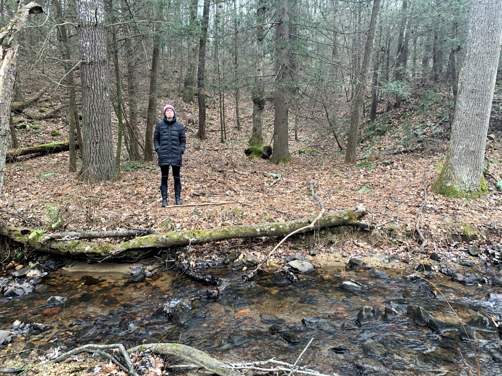
Day 8-12 - Christmas in Columbia, SC
Leaving Asheville, we continued onto Columbia, where we'll be spending Christmas. This is where my brother-in-law David is stationed. Not a lot happened here. it was a bit of a break from driving so much. This is where I did the most running -- which is great. The best run I had was at Congaree National Park. The park itself is a swamp and it rained so much recently that the Park Ranger told me it was basically knee high water on the trails. (Thanks global climate change) However, she said to feel free to try. Of course, that means I had to try. So I ran/waded through the swamp for about 7 miles. I later learned there's all kinds of interesting things in the water -- including alligators and various medications -- but too late now.
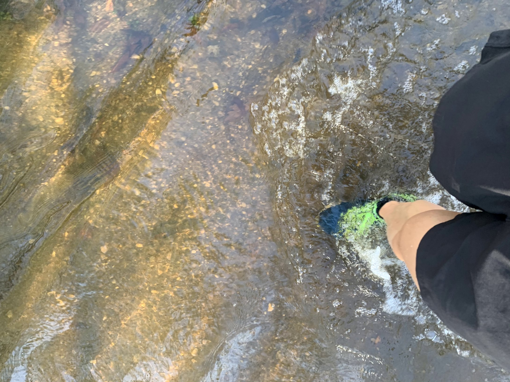
I thought this picture was funny. The kids in the picture were wondering why I was in the swamp. But clearly the trail marker is there on the tree...
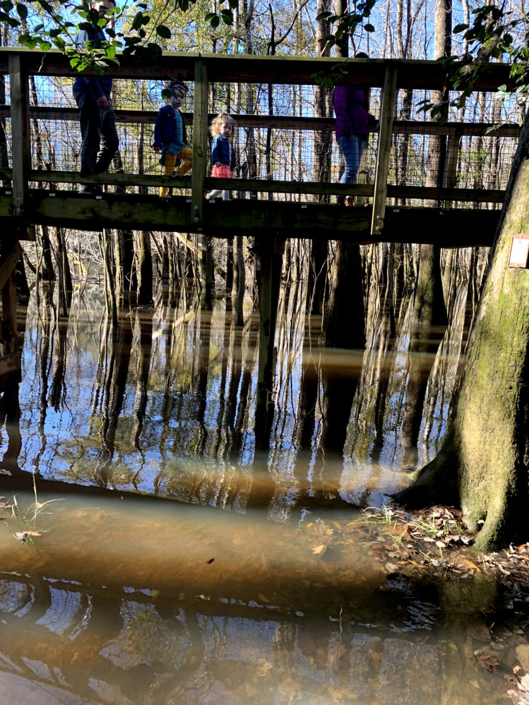
For the most part in Columbia, we just ate, opened presents, and worked out a lot. I even got to go lift at a gym at Fort Jackson. It was unseasonably 70 degrees and sunny most of the days so that was nice. Here, David and Erin are giving the kids a paddleboat ride at Sesquicentennial State Park.
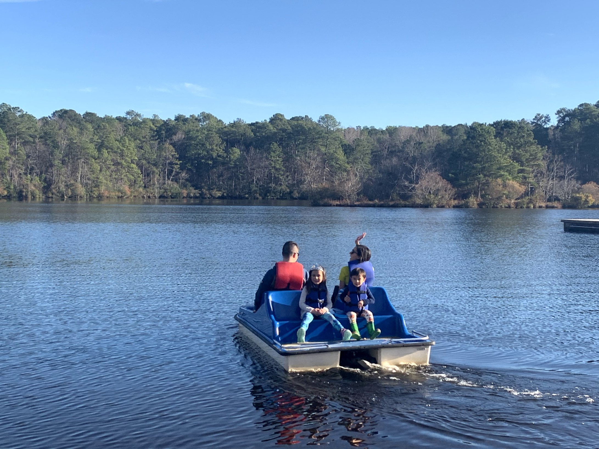
And V got to play with a little girl at Poinsett State Park -- which had an abandoned mill that the kids enjoyed. This park also featured some giant Loblolly Pine Trees.
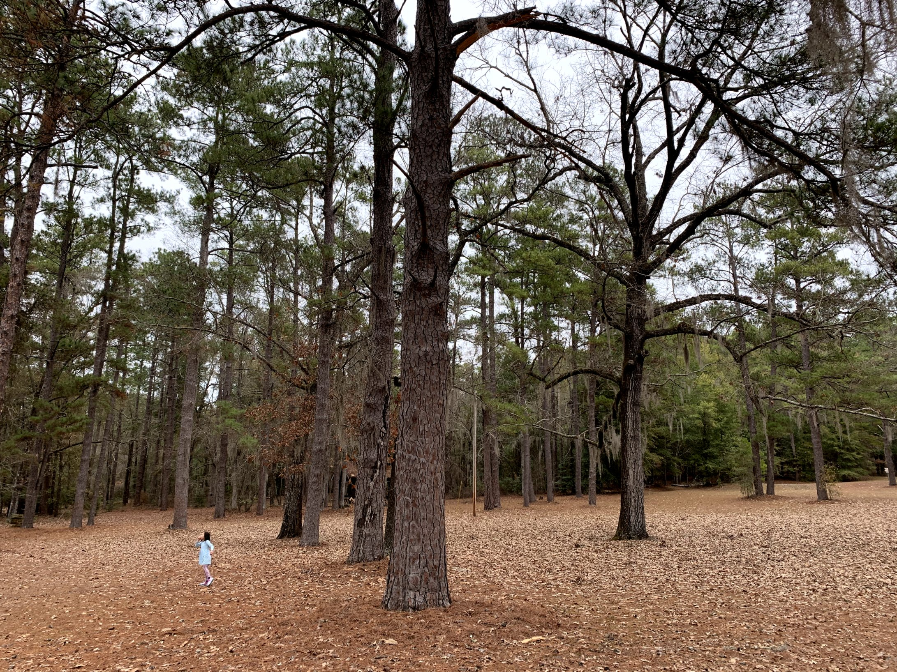
Day 13-17 - Hilton Head, SC
After the Dana's mom and dad left to go back to Michigan, we continued south to Hilton Head. This was probably the warmest part of our trip. Immediately, Ducky was ready to go dig a hole on the beach.
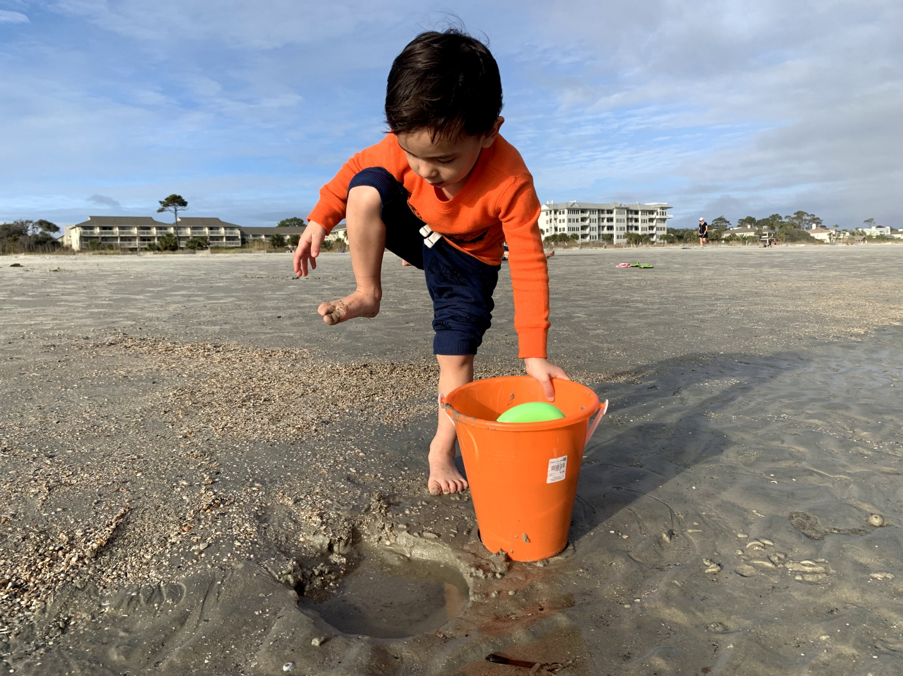
On the 2nd day, we went to check out Savannah, which was cool old city. We ate in a really old diner called Debi's and the hostess was the most lovable person ever. The day was going fine and we decided to stop at a playground...
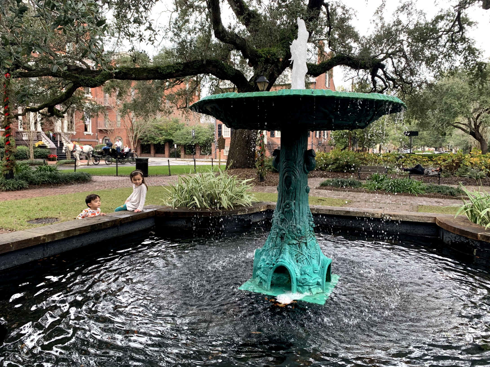
...that's when V decided to bash in her face into a slide and completely fractured her front teeth. After a short panic, Dana and I took her to a pediatric dentist in Bluffton called Coastal Pediatric Dentistry and they were some of the nicest people. They gave her some laughing gas, fixed her up, and V ate ice cream for the next 12 hours.
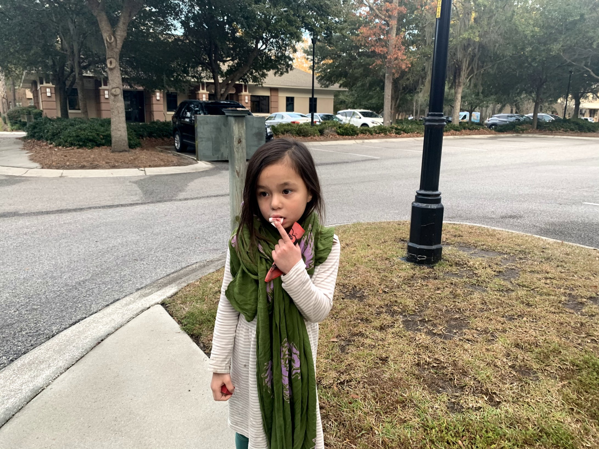
The next morning, I ran 7 miles on the beach and got to my goal of running 1000 miles in 2019. Afterwards, we drove to "Harbourtown" which was basically the bourgeois class' section of Hilton Head. Somehow they managed to create a place where it cost $8 just to drive in -- and people do it. In addition, the place is just full of your country club types -- which doesn't fit my proletarian lifestyle. However, one nice point is the Sea Pines Forest Preserve and it has a nice short walk for the kids. We then spent the afternoon back on the beach exploring the puddles left behind by the low tide.
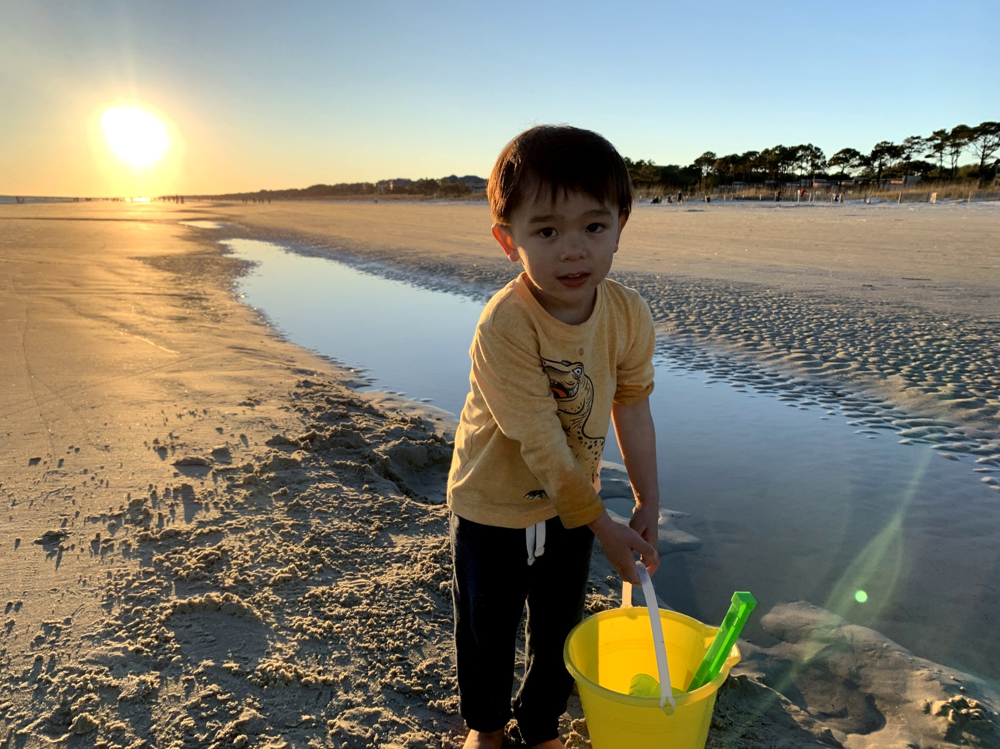
On new years day, we decided to goto Fish Haul Park where apparently people find shark teeth all the time. We didn't find any, but the kids still had fun.
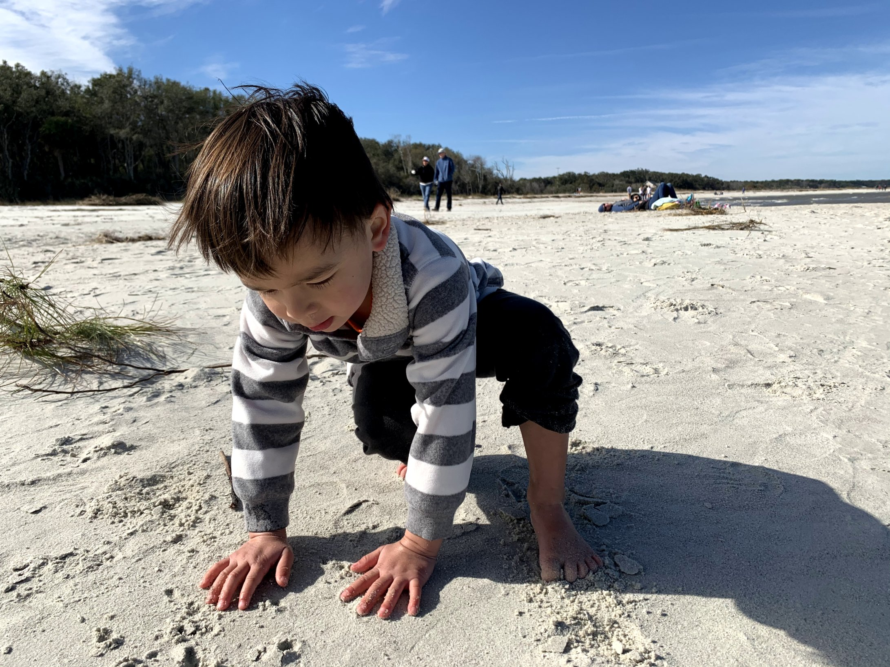
Day 18 - Macon and Atlanta
After spending the morning being awoken by Heather leaving at 5 a.m., we said goodbye to the beach and started our long journey back to Chicago. Our first stop was Macon to get some "real" Southern food. It was not that great -- I should have known Southern food is just fried anything with mac and cheese. However, a real highlight of Macon was the Ocmulgee Mounds, an ancient Native American mound. That night, we tried a a hotel for the first time cause there weren't any airbnbs in the area and I completely forgot what a nightmare the "continental breakfast" is -- it's a toddler paradise though.
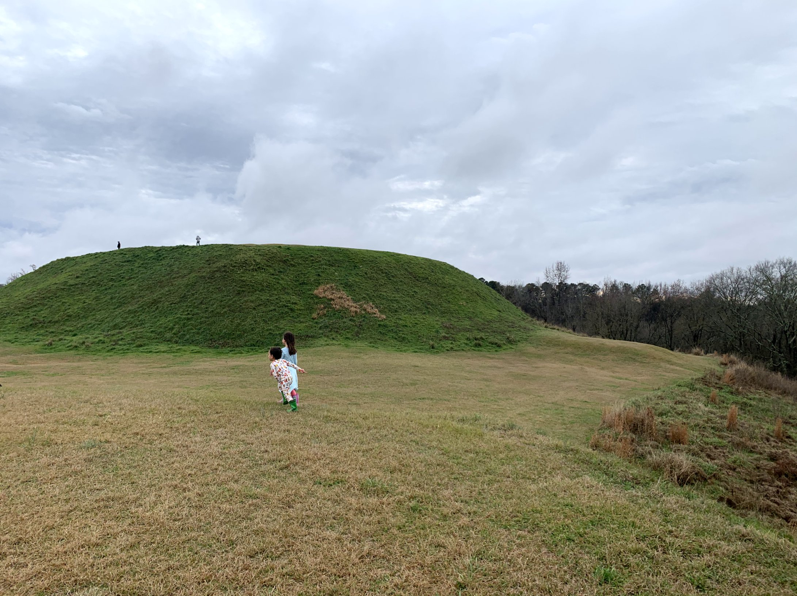
Day 19, 20 - Chattanooga
On the way North, there were a ton of civil war battlefield sites. Turns out, Tennessee was basically the battleground of America. Most of these sites are ran by the NPS which means we had to go. One of the 2 sites we were to was Chickamauga National Military Park.
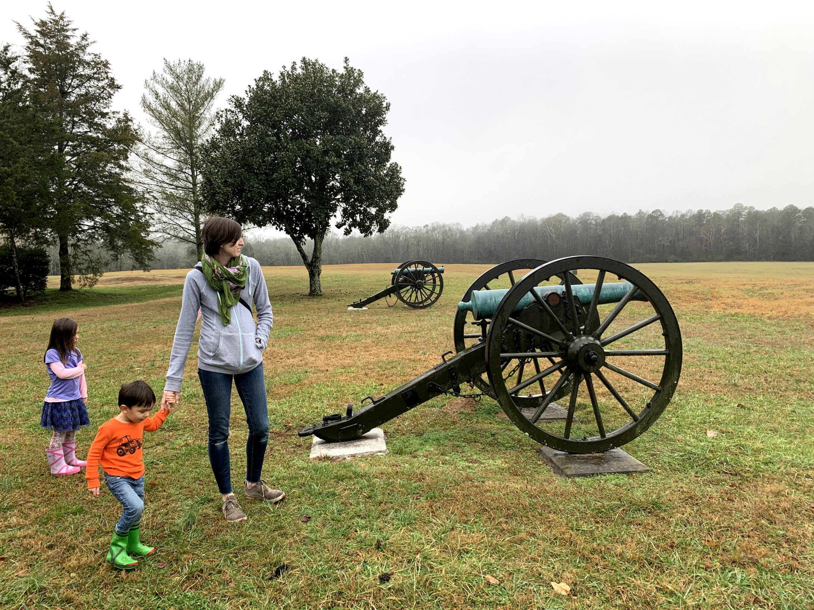
From there, we drove to Chattanooga. Dana and I decided Chatty was the most livable city we visited. It is incredibly outdoorsy: It even has a 13 mile riverfront trail and a site to rent kayaks and canoes on the Tennesse River. Further, theres a hotel named the Chattanooga Choo Choo where you can stay in the train cars. (We didn't stay there because I was an idiot) Unfortunately our first day in Chattanooga was incredibly rainy and we drove to the mountains for a warm bowl of Pho.
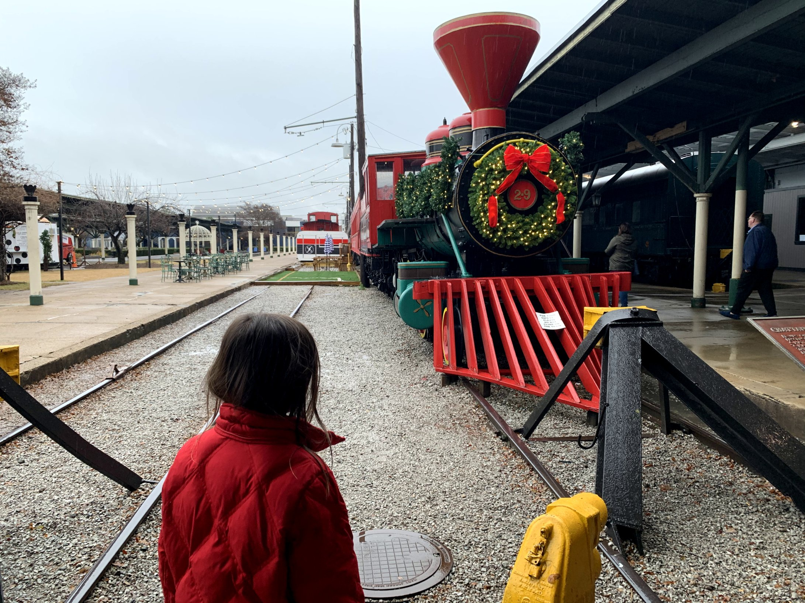
The next day was sunny and we took advantage of it with a jam packed day. I started the day by running a good portion of the river trail. It was really nice and there were tons of people out running. Next, we went to the International Towing & Recovery Museum. Although the idea of a towing museum sounds really stupid but it was actually really interesting. The kids are still talking about the tow trucks.
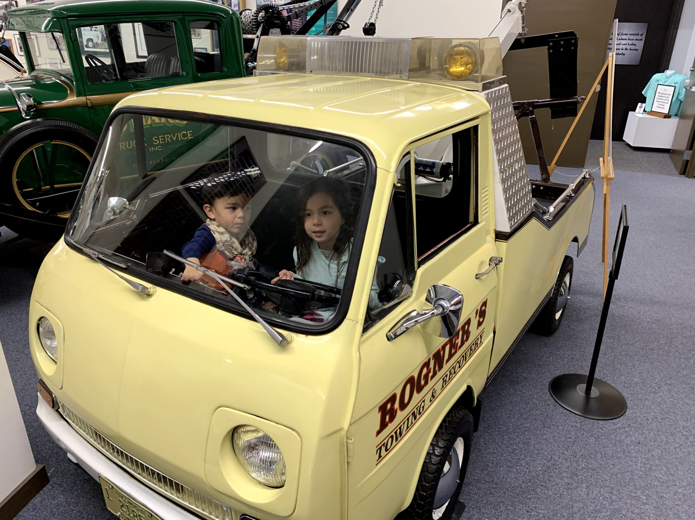
Next, we did a hike at Falling Water Falls. This hike was a bit dangerous for kids -- to the right of this photo is a waterfall cliff...
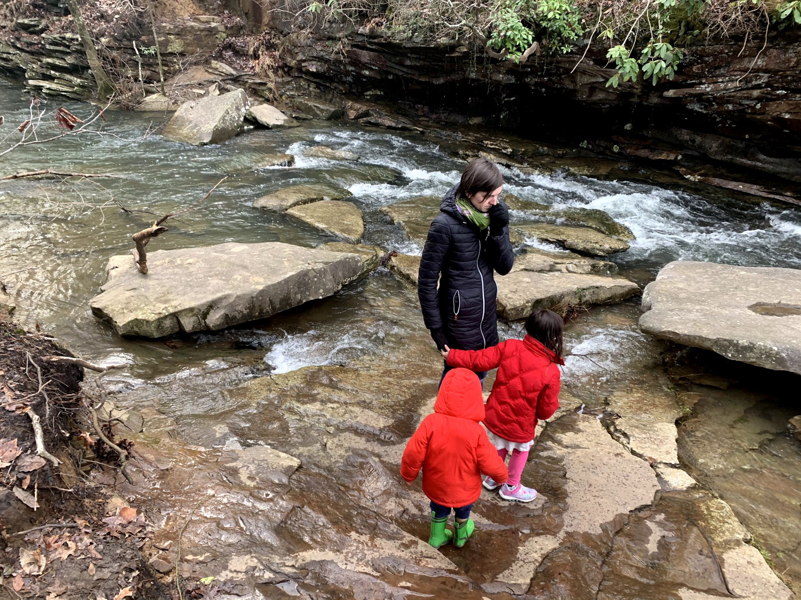
Day 21 Nashville and Paducah, KY
Our final overnight stay was at Paducah. This region is the meeting point between the Teneessee, Ohio, Missouri and Mississippi Rivers -- thus, lots of barges. Lots of rivers means it was a militarily strategic location. Hence, even more civil war sites.
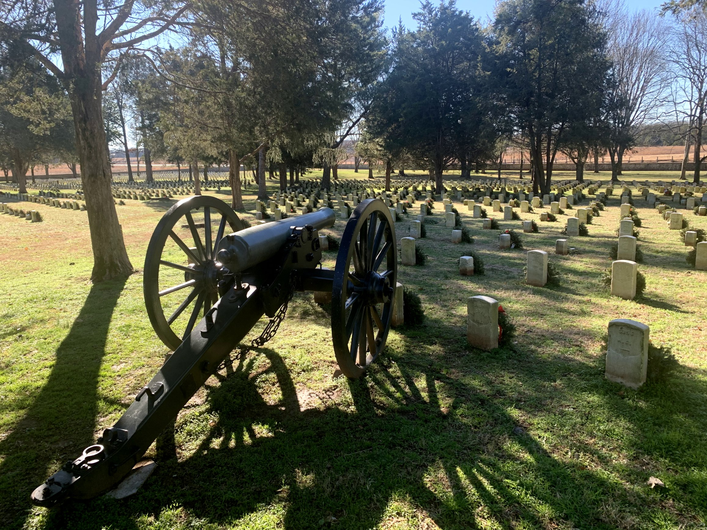
We then had lunch with my college friend Laura in Nashville. It was in a pizza resturant that also has a play place (Why have they not brought this to Chicago?!) And continued onto Paducah. Paducah was a booming metropolis ... in the 40's. It's trying to redefine itself as a theatre and arts town. Regardless, the population has since dwindled but it was still an interesting town full of relics of when it was booming. One example is this train in front of an art deco mural that says "Welcome to Atomic City!"
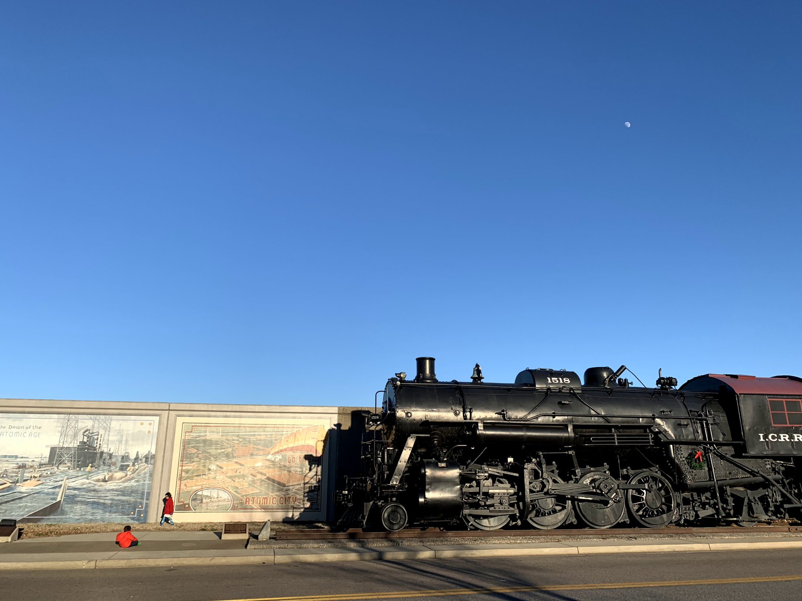
By the way, that wall where that mural was painted was to prevent the water from the river flooding into the city. There are these massive metal gates and concrete walls to hold the water back. Apparently every spring the town floods. We are well on the way there now:
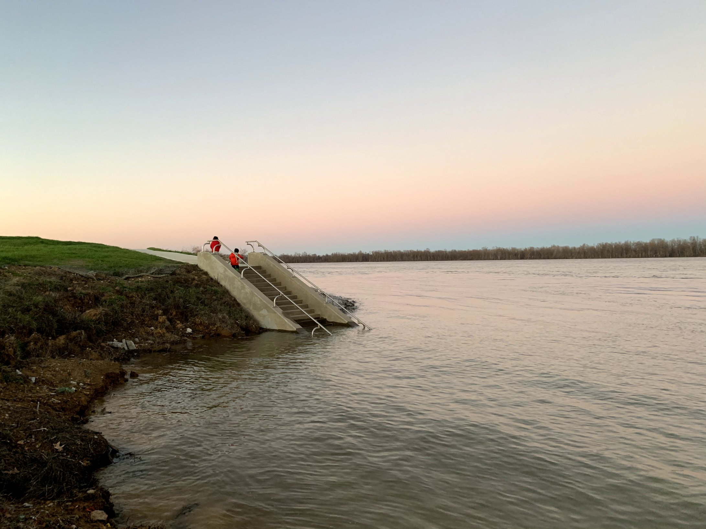
Day 22 Crab Orchard National Wildlife and Champaign
After spending the night in a dirty airbnb we continued back into Illinois. Southern Illinois is actually really beautiful but we didn't want to stop so early on our final day of driving. So we chose Crab Orchard Preserve to stop at. Supposdly Janurary is Bald Eagle spotting season there. We talked to one of the most helpful park rangers and even borrowed a pair of binoculars from her. No Eagles were spotted.
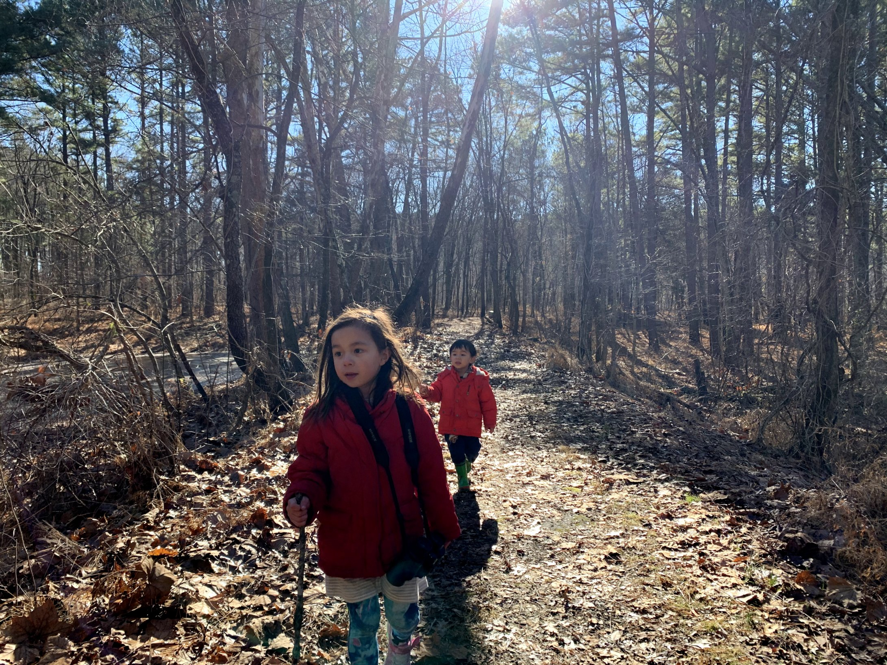
We began this roadtrip the same way we ended it -- at a college campus. This time in a place where I lived 4 years and made many friends at: U of I. Champaign isn't what it used to be (a lovable dumpy corn town) and has since developed into a city full of high rises. Luckily, my favorite $5 Za's pizza still survived; and it's still $5. After the evening rush, we drove back to the home.
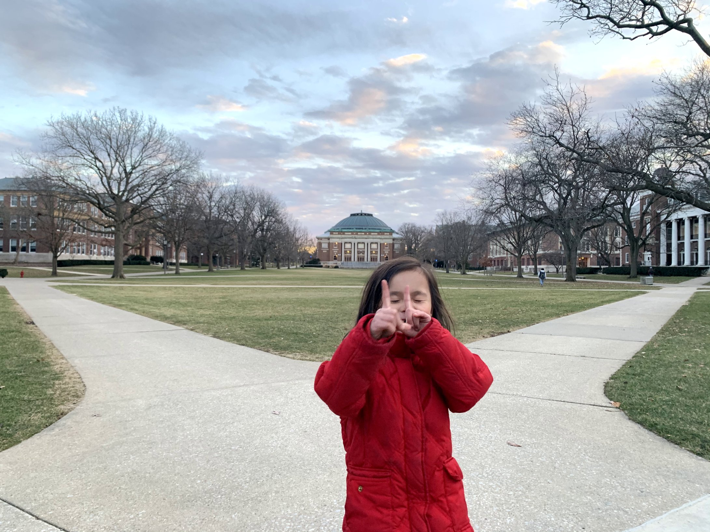